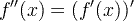
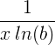
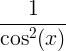
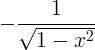
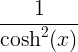
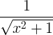
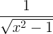
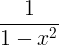

Derivative rules
Derivative rules and laws. Derivatives of functions table.
Derivative definition
The derivative of a function is the ratio of the difference of function value f(x) at points x+Δx and x with Δx, when Δx is infinitesimally small. The derivative is the function slope or slope of the tangent line at point x.

Second derivative
The second derivative is given by:

Or simply derive the first derivative:

Nth derivative
The nth derivative is calculated by deriving f(x) n times.
The nth derivative is equal to the derivative of the (n-1) derivative:
f (n)(x) = [f (n-1)(x)]'
Example:
Find the fourth derivative of
f (x) = 2x5
f (4)(x) = [2x5]'''' = [10x4]''' = [40x3]'' = [120x2]' = 240x
Derivative on graph of function
The derivative of a function is the slop of the tangential line.
Derivative rules
| Derivative sum rule |
( a f (x) + bg(x) ) ' = a f ' (x) + bg' (x) |
| Derivative product rule |
( f (x) ∙ g(x) ) ' = f ' (x) g(x) + f (x) g' (x) |
| Derivative quotient rule |

|
| Derivative chain rule |
f ( g(x) ) ' = f ' ( g(x) ) ∙ g' (x) |
Derivative sum rule
When a and b are constants.
( a f (x) + bg(x) ) ' = a f ' (x) + bg' (x)
Example:
Find the derivative of:
3x2 + 4x.
According to the sum rule:
a = 3, b = 4
f(x) = x2 , g(x) = x
f ' (x) = 2x , g' (x) = 1
(3x2 + 4x)' = 3⋅2x+4⋅1 = 6x + 4
Derivative product rule
( f (x) ∙ g(x) ) ' = f ' (x) g(x) + f (x) g' (x)
Derivative quotient rule
Derivative chain rule
f ( g(x) ) ' = f ' ( g(x) ) ∙ g' (x)
This rule can be better understood with Lagrange's notation:

Function linear approximation
For small Δx, we can get an approximation to f(x0+Δx), when we know f(x0) and f ' (x0):
f (x0+Δx) ≈ f (x0) + f '(x0)⋅Δx
Derivatives of functions table
| Function name | Function | Derivative |
|---|---|---|
|
f (x) |
f '(x) | |
| Constant |
const |
0 |
| Linear |
x |
1 |
| Power |
x a |
a x a-1 |
| Exponential |
e x |
e x |
| Exponential |
a x |
a x ln a |
| Natural logarithm |
ln(x) |
|
| Logarithm |
logb(x) |
 |
| Sine |
sin x |
cos x |
| Cosine |
cos x |
-sin x |
| Tangent |
tan x |
 |
| Arcsine |
arcsin x |
|
| Arccosine |
arccos x |
 |
| Arctangent |
arctan x |
|
| Hyperbolic sine |
sinh x |
cosh x |
| Hyperbolic cosine |
cosh x |
sinh x |
| Hyperbolic tangent |
tanh x |
 |
| Inverse hyperbolic sine |
sinh-1 x |
 |
| Inverse hyperbolic cosine |
cosh-1 x |
 |
| Inverse hyperbolic tangent |
tanh-1 x |
 |

Derivative examples
Example #1
f (x) = x3+5x2+x+8
f ' (x) = 3x2+2⋅5x+1+0 = 3x2+10x+1
Example #2
f (x) = sin(3x2)
When applying the chain rule:
f ' (x) = cos(3x2) ⋅ [3x2]' = cos(3x2) ⋅ 6x
Second derivative test
When the first derivative of a function is zero at point x0.
f '(x0) = 0
Then the second derivative at point x0 , f''(x0), can indicate the type of that point:
|
f ''(x0) > 0 |
local minimum |
|
f ''(x0) < 0 |
local maximum |
|
f ''(x0) = 0 |
undetermined |
See also
CALCULUS
- Limit
- Derivative
- Integral
- Series
- Laplace transform
- Convolution
- Calculus symbols